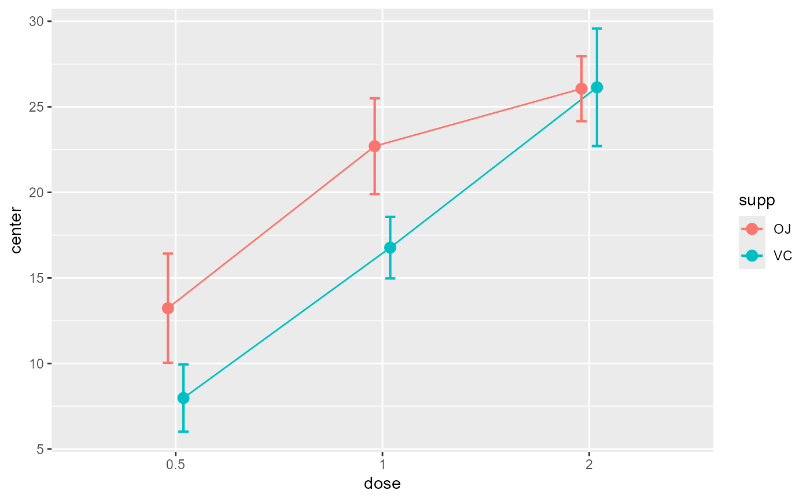
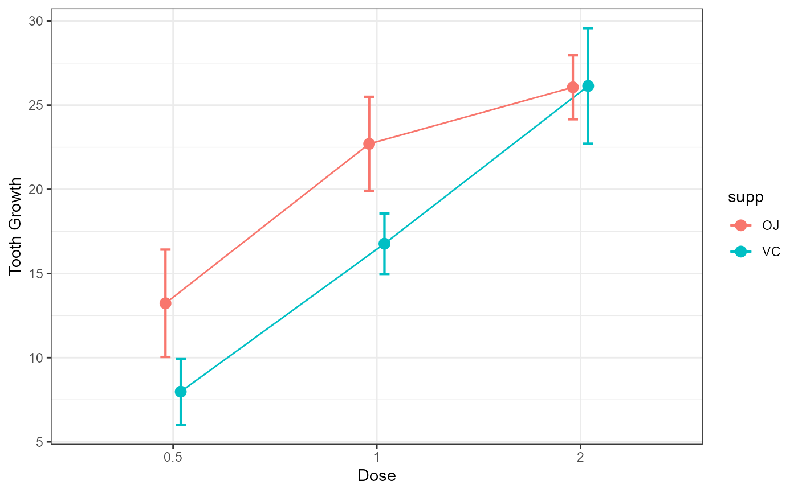
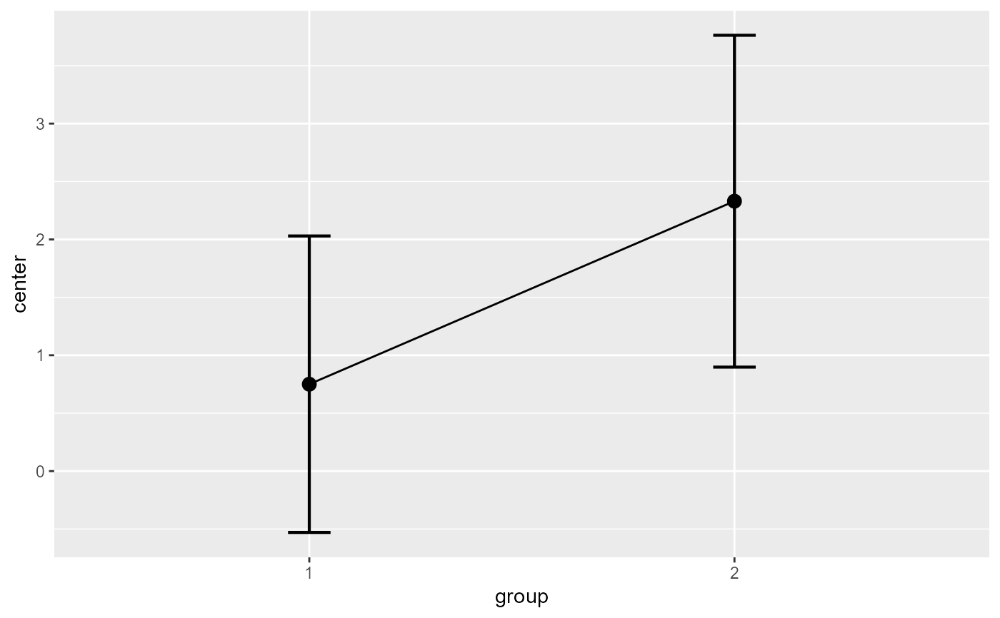
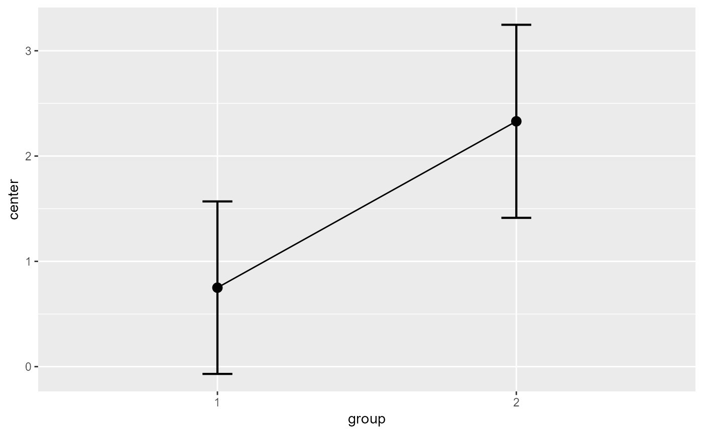
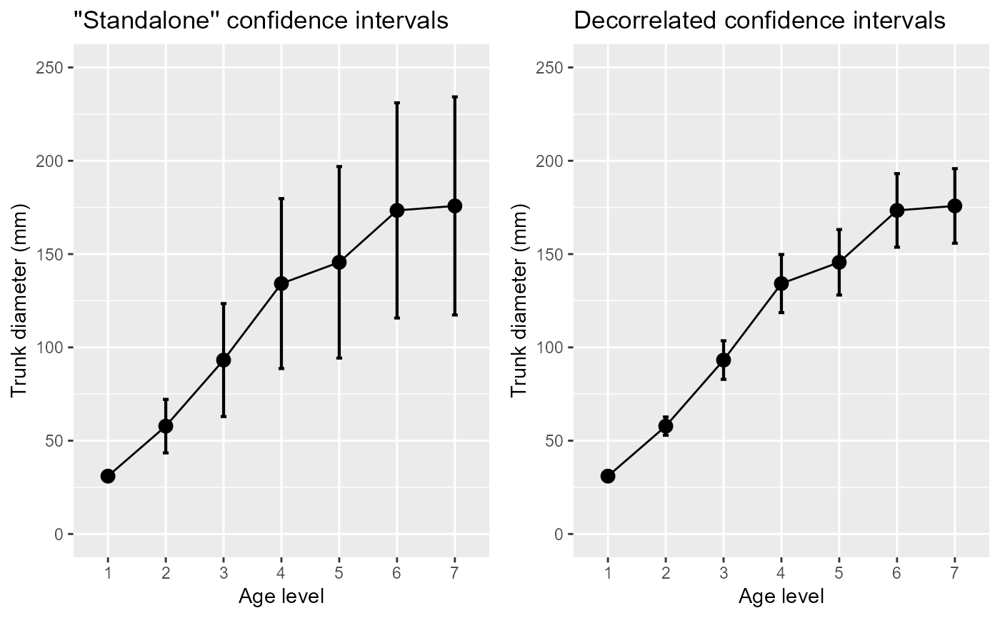
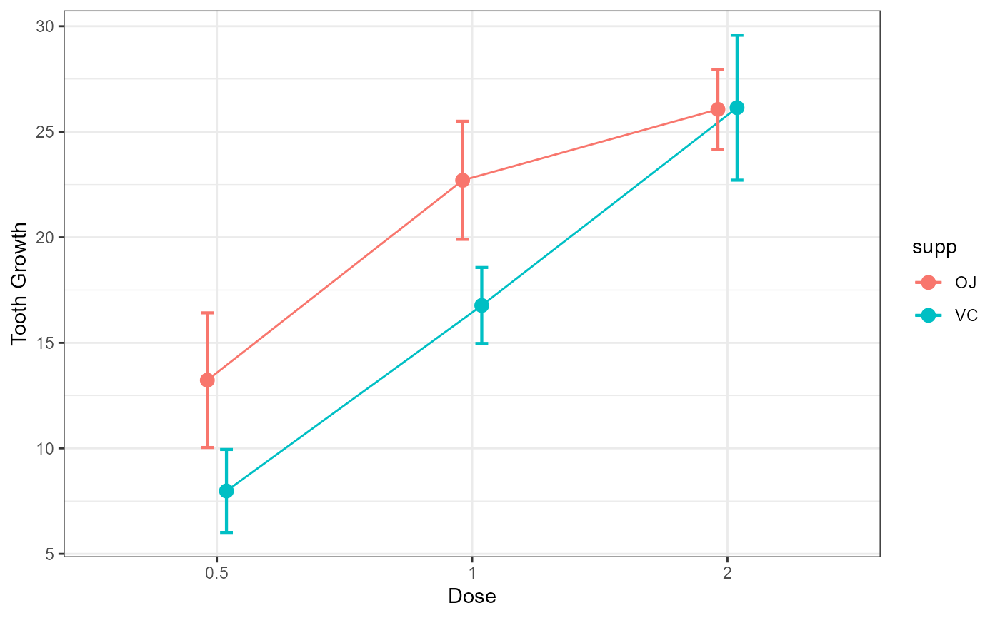
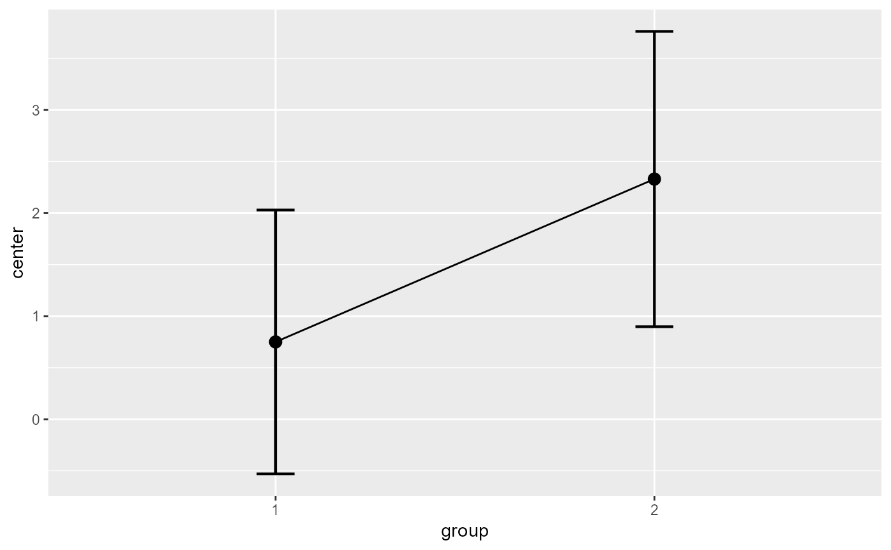
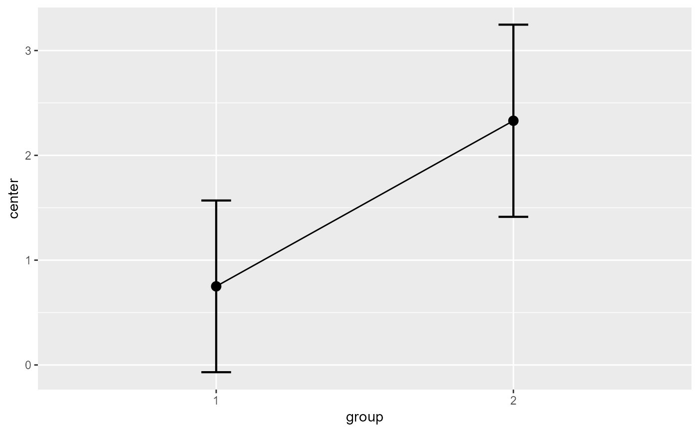
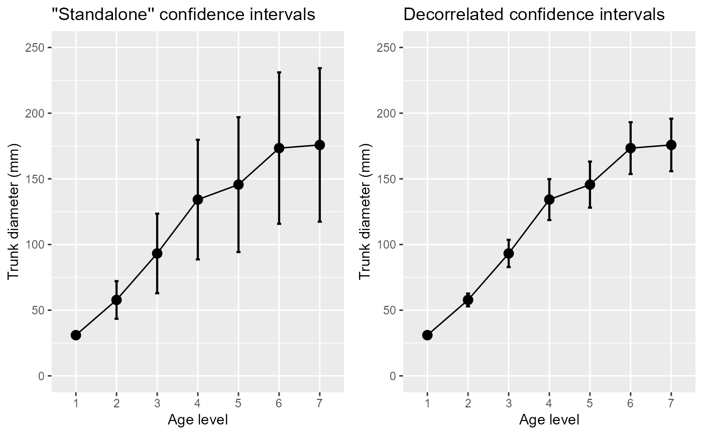

The function superb() plots standard error or confidence interval for
various descriptive statistics under various designs, sampling schemes,
population size and purposes, according to the superb framework.
See cgh21superb for more.
The functions superb() is now the entry point
to realize summary plots.
Compared to the previously documented superbPlot(),
superb() is based on formula and accept
long and wide format.
superb(
formula,
data,
WSFactors = NULL,
WSDesign = NULL,
factorOrder = NULL,
statistic = "mean",
errorbar = "CI",
gamma = 0.95,
adjustments = list(purpose = "single", popSize = Inf, decorrelation = "none",
samplingDesign = "SRS"),
showPlot = TRUE,
plotStyle = NULL,
plotLayout = "line",
preprocessfct = NULL,
postprocessfct = NULL,
clusterColumn = NULL,
...
)Arguments
- formula
a formula describing the design of the data frame
- data
Dataframe in wide or long format
- WSFactors
The name of the within-subject factor(s)
- WSDesign
the within-subject design if not a full factorial design (default "fullfactorial")
- factorOrder
Order of factors as shown in the graph (in that order: x axis, groups, horizontal panels, vertical panels)
- statistic
The summary statistic function to use as a string
- errorbar
The function that computes the error bar. Should be "CI" or "SE" or any function name if you defined a custom function. Default to "CI"
- gamma
The coverage factor; necessary when
errorbar == "CI". Default is 0.95.- adjustments
List of adjustments as described below. Default is
adjustments = list(purpose = "single", popSize = Inf, decorrelation = "none", samplingDesign = "SRS")- showPlot
Defaults to TRUE. Set to FALSE if you want the output to be the summary statistics and intervals.
- plotStyle
![[Deprecated]](figures/lifecycle-deprecated.svg)
- plotLayout
The type of object to plot on the graph. See full list below. Defaults to "line".
- preprocessfct
is a transform (or vector of) to be performed first on data matrix of each group
- postprocessfct
is a transform (or vector of)
- clusterColumn
used in conjunction with samplingDesign = "CRS", indicates which column contains the cluster membership
- ...
In addition to the parameters above, superbPlot also accept a number of optional arguments that will be transmitted to the plotting function, such as pointParams (a list of ggplot2 parameters to input inside geoms; see ?geom_bar2) and errorbarParams (a list of ggplot2 parameters for geom_errorbar; see ?geom_errorbar)
Value
a plot with the correct error bars or a table of those summary statistics. The plot is a ggplot2 object with can be modified with additional declarations.
Details
The possible adjustements are the following
popsize: Size of the population under study. Defaults to Inf
purpose: The purpose of the comparisons. Defaults to "single". Can be "single", "difference", or "tryon".
decorrelation: Decorrelation method for repeated measure designs. Chooses among the methods "CM", "LM", "CA", "UA", "LDr" (with r an integer) or "none". Defaults to "none". "CA" is correlation-adjusted c19superb; "CM" is Cousineau-Morey b12superb; "LM" is Loftus and Masson lm94superb; "UA" is based on the unitary Alpha method (derived from the Cronbach alpha; see lc22superb). "LDr" is local decorrelation (useful for long time series with autoregressive correlation structures; see cppf24superb).
samplingDesign: Sampling method to obtain the sample. implemented sampling is "SRS" (Simple Randomize Sampling) and "CRS" (Cluster-Randomized Sampling).
The formulas can be for long format data using | notation, e.g.,
superb( extra ~ group | ID, sleep )
or for wide format, using cbind() or crange() notation, e.g.,
superb( cbind(DV.1.1, DV.2.1,DV.1.2, DV.2.2,DV.1.3, DV.2.3) ~ . , dta, WSFactors = c("a(2)","b(3)"))superb( crange(DV.1.1, DV.2.3) ~ . , dta, WSFactors = c("a(2)","b(3)"))
The layouts for plots are the following:
These are basic plots:
"bar" Shows the summary statistics with bars and error bars;
"line" Shows the summary statistics with lines connecting the conditions over the first factor;
"point" Shows the summary statistics with isolated points
"lineband" illustrates the confidence intervals as a band;
These plots add distributional information in addition
"pointjitter" Shows the summary statistics along with jittered points depicting the raw data;
"pointjitterviolin" Also adds violin plots to the previous layout
"pointindividualline" Connects the raw data with line along the first factor (which should be a repeated-measure factor)
"raincloud" Illustrates the distribution with a cloud (half_violin_plot) and jittered dots next to it. Looks better when coordinates are flipped
+coord_flip()"corset" illustrates within-subject designs with individual lines and clouds.
Circular plots (aka radar plots) results from the following layouts:
"circularpoint" Shows the summary statistics with isolated points
"circularline" Shows the summary statistics with lines;
"circularlineband" Also adds error bands instead of error bars;
"circularpointjitter" Shows summary statistics and error bars but also jittered dots;
"circularpointlinejitter" Same as previous layout, but connect the points with lines. New layouts are added from times to time. Personalized layouts can also be created (see Vignette5).
References
Examples
######################################################################
# Basic example using a built-in dataframe as data.
# By default, the mean is computed and the error bar are 95% confidence intervals
superb(len ~ dose + supp, ToothGrowth)

# Example changing the summary statistics to the median and
# the error bar to 80% confidence intervals
superb(len ~ dose + supp, ToothGrowth,
statistic = "median", errorbar = "CI", gamma = .80)
 # Example introducing adjustments for pairwise comparisons
# and assuming that the whole population is limited to 200 persons
superb(len ~ dose + supp, ToothGrowth,
adjustments = list( purpose = "difference", popSize = 200) )
# This example adds ggplot directives to the plot produced
library(ggplot2)
superb(len ~ dose + supp, ToothGrowth) +
xlab("Dose") + ylab("Tooth Growth") +
theme_bw()

######################################################################
# The following examples are based on repeated measures
library(gridExtra)
options(superb.feedback = 'none') # shut down 'warnings' and 'design' interpretation messages
# A simple example: The sleep data
# The sleep data are paired data showing the additional time of sleep with
# the soporific drug #1 (("group = 1") and with the soporific drug #2 ("group = 2").
# There is 10 participants with two measurements.
# sleep is available in long format
# Makes the plots first without decorrelation:
superb( extra ~ group | ID, sleep )

# As seen the error bar are very long. Lets take into consideration correlation...
# ... with decorrelation (technique Correlation-adjusted CA):
superb(extra ~ group | ID, sleep,
# only difference:
adjustments = list(purpose = "difference", decorrelation = "CA")
)

# The error bars shortened as the correlation is substantial (r = .795).
######################################################################
# Another example: The Orange data
# This example contains 5 trees whose diameter (in mm) has been measured at various age (in days):
data(Orange)
# Makes the plots first without decorrelation:
p1 <- superb( circumference ~ age | Tree, Orange,
adjustments = list(purpose = "difference", decorrelation = "none")
) +
xlab("Age level") + ylab("Trunk diameter (mm)") +
coord_cartesian( ylim = c(0,250) ) + labs(title="''Standalone'' confidence intervals")
# ... and then with decorrelation (technique Correlation-adjusted CA):
p2 <- superb( circumference ~ age | Tree, Orange,
adjustments = list(purpose = "difference", decorrelation = "CA")
) +
xlab("Age level") + ylab("Trunk diameter (mm)") +
coord_cartesian( ylim = c(0,250) ) + labs(title="Decorrelated confidence intervals")
# You can present both plots side-by-side
grid.arrange(p1, p2, ncol=2)

######################################################################
# Example introducing adjustments for pairwise comparisons
# and assuming that the whole population is limited to 200 persons
superb(len ~ dose + supp, ToothGrowth,
adjustments = list( purpose = "difference", popSize = 200) )
# This example adds ggplot directives to the plot produced
library(ggplot2)
superb(len ~ dose + supp, ToothGrowth) +
xlab("Dose") + ylab("Tooth Growth") +
theme_bw()

######################################################################
# The following examples are based on repeated measures
library(gridExtra)
options(superb.feedback = 'none') # shut down 'warnings' and 'design' interpretation messages
# A simple example: The sleep data
# The sleep data are paired data showing the additional time of sleep with
# the soporific drug #1 (("group = 1") and with the soporific drug #2 ("group = 2").
# There is 10 participants with two measurements.
# sleep is available in long format
# Makes the plots first without decorrelation:
superb( extra ~ group | ID, sleep )

# As seen the error bar are very long. Lets take into consideration correlation...
# ... with decorrelation (technique Correlation-adjusted CA):
superb(extra ~ group | ID, sleep,
# only difference:
adjustments = list(purpose = "difference", decorrelation = "CA")
)

# The error bars shortened as the correlation is substantial (r = .795).
######################################################################
# Another example: The Orange data
# This example contains 5 trees whose diameter (in mm) has been measured at various age (in days):
data(Orange)
# Makes the plots first without decorrelation:
p1 <- superb( circumference ~ age | Tree, Orange,
adjustments = list(purpose = "difference", decorrelation = "none")
) +
xlab("Age level") + ylab("Trunk diameter (mm)") +
coord_cartesian( ylim = c(0,250) ) + labs(title="''Standalone'' confidence intervals")
# ... and then with decorrelation (technique Correlation-adjusted CA):
p2 <- superb( circumference ~ age | Tree, Orange,
adjustments = list(purpose = "difference", decorrelation = "CA")
) +
xlab("Age level") + ylab("Trunk diameter (mm)") +
coord_cartesian( ylim = c(0,250) ) + labs(title="Decorrelated confidence intervals")
# You can present both plots side-by-side
grid.arrange(p1, p2, ncol=2)

######################################################################